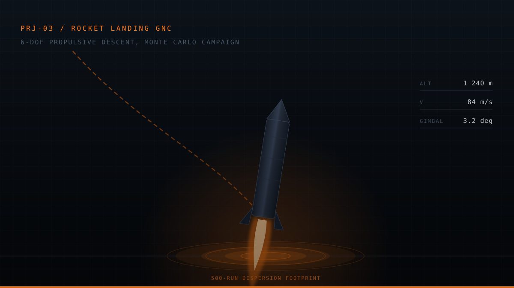
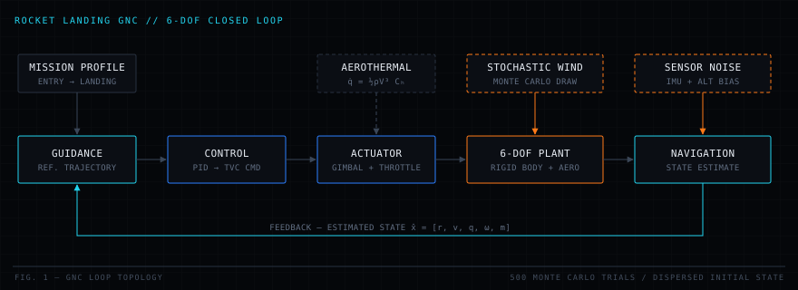

Home / Projects / PRJ-05 Rocket Landing GNC
Rocket Landing GNC
POINT-MASS DESCENT · SINGLE-RUN CONTROLLER DEMO · VERIFICATION PENDING
An exploratory propulsive-landing model used to study the guidance and control loop before investing in higher-fidelity dynamics. The current implementation demonstrates one point-mass descent scenario; it does not yet substantiate a 6-DOF, Monte Carlo, or landing-accuracy claim.

00Evidence status
What is supported: a private Python prototype demonstrates a point-mass descent scenario and a basic closed-loop control concept.
What is not supported yet: 6-DOF rigid-body dynamics, aerodynamic or aerothermal validation, stochastic dispersion statistics, a 500-run campaign, and sub-2 m landing accuracy.
Evidence source: source inspection of the private FalconV5 prototype. No public repository, downloadable report, or result-plot set is currently available.
01Problem
Propulsive landing couples trajectory shaping, changing mass, limited thrust authority, and state-feedback control. A useful first step is to prove the software loop closes on a deliberately simple plant before adding rotational dynamics and uncertainty.
The prototype therefore asks a narrow question: can a point-mass vehicle follow one descent case under the implemented controller? The harder question—how it performs across realistic dispersions— remains the next phase, not a result of this one.
Prototype objective. Establish a reproducible point-mass descent baseline that can later be extended and verified without confusing planned fidelity with implemented fidelity.
01APlanned verification gates
| Gate | Needed evidence | Current state | Disposition |
|---|---|---|---|
| RL-G1 | Repeatable nominal point-mass run with saved inputs and outputs | Prototype demonstrated | Needs packaged evidence |
| RL-G2 | Analytical sub-cases and time-step convergence | No visible test record | Pending |
| RL-G3 | 6-DOF model with frame, sign, conservation, and actuator-limit tests | Not implemented in reviewed prototype | Future work |
| RL-G4 | Justified uncertainty model and seeded batch campaign | Not available | Future work |
| RL-G5 | Landing-dispersion plots with reproducible data | Not available | No accuracy claim |
01BPrototype scope
- Translational descent. The plant is a point-mass approximation suitable for early controller experiments.
- One nominal scenario. The visible implementation supports exploratory, single-run evaluation.
- Closed-loop concept. A controller command is integrated with the simplified plant.
- Rotational dynamics. Attitude, angular rate, inertia, and gimbal coupling need a verified 6-DOF extension.
- Environment fidelity. Aerodynamics, heating, wind, and navigation-error models are not substantiated by the reviewed artifact.
- Statistical performance. No seeded batch data or dispersion distribution is available.
02Prototype design
The implemented artifact is the smallest useful loop: a descent reference, a controller, and a point-mass plant integrated through one scenario. That decomposition is a useful scaffold, but the higher-fidelity blocks shown below remain a target architecture.

Build sequence
| Stage | Scope | Evidence needed | Status |
|---|---|---|---|
| Baseline | Point-mass plant and nominal controller run | Saved configuration, trace, and regression test | Prototype exists |
| Dynamics | Rigid-body attitude, changing inertia, and bounded actuation | Unit, conservation, and frame-convention tests | Pending |
| Uncertainty | Wind, initial state, sensor, and propulsion dispersions | Justified distributions and seeded repeatability | Pending |
| Campaign | Batch analysis and tail-case attribution | Versioned data, plots, and convergence study | Pending |
03Model boundary
The equations below document the intended progression from the point-mass baseline to a higher-fidelity simulator. They should not be read as evidence that each model is implemented, calibrated, or verified in the current prototype.
Planned rigid-body extension
Planned aerodynamic extension
Planned aerothermal screening
A future heating model would not size thermal protection here; it would screen whether trajectories selected by the guidance law stay inside a sensible heating envelope rather than buying landing accuracy with an unflyable entry. No such aerothermal model exists in the reviewed prototype.
Controller design form
Planned dispersion model
03AMethod roadmap
- Current: numerical integration of the simplified translational descent state.
- Next: quaternion attitude propagation with explicit frame-convention and normalization tests.
- Next: bounded actuator dynamics and controller anti-windup verified under saturation.
- Next: calibrated atmosphere, aerodynamic, and propulsion models with provenance.
- Next: seeded batch sampling and data-backed dispersion post-processing.
04Implementation
| Language | Python 3 with NumPy and SciPy |
|---|---|
| Plant | Exploratory point-mass descent model |
| Controller | Basic closed-loop demonstration for one nominal scenario |
| Execution | Single-run prototype; no published batch runner |
| Source | Private FalconV5 repository; no public release |
| Outputs | No curated, reproducible plot or data package published yet |
05Verification status
The available prototype supports inspection and exploratory execution, but it does not include a visible verification record for the broader system described by the target architecture.
- Package the baseline. Save the nominal input configuration, trajectory output, environment, and source revision.
- Add analytical checks. Compare ballistic and constant-thrust sub-cases with closed-form solutions.
- Run convergence tests. Demonstrate that the nominal answer is insensitive to integration step.
- Verify the extended plant. Add frame, sign, conservation, mass-property, and actuator-limit tests before claiming 6-DOF fidelity.
- Only then run dispersions. Publish seeded batch inputs, all outputs, convergence of statistics, and tail-case attribution.
05AClaim boundary
A plausible trajectory is evidence that the prototype runs, not that the physics are validated or that the controller is robust. Landing accuracy requires a defined touchdown metric, calibrated uncertainty distributions, repeated trials, and saved data that another reviewer can reproduce.
- No Monte Carlo claim: no batch artifact was found in the reviewed source.
- No accuracy claim: no auditable landing-dispersion dataset is published.
- No 6-DOF claim: the reviewed plant is point-mass, not a verified rigid-body model.
06Demonstrated outcome
- The prototype closes a simplified controller-and-plant loop for a nominal descent case.
- The code establishes a starting point for higher-fidelity dynamics and repeatable verification.
- No statistical robustness, touchdown accuracy, aerothermal margin, or hardware result is claimed.
This page intentionally does not draw a chart from unversioned or unavailable data.
06AEngineering tradeoffs
| Tradeoff | Gained | Paid |
|---|---|---|
| Point-mass first | Fast iteration on the loop and numerical plumbing | Cannot establish attitude, gimbal, or rigid-body performance |
| Single scenario first | Simple debugging and a clear baseline | Cannot establish robustness or a probability distribution |
| Private development | Rapid iteration without packaging overhead | Reviewers cannot reproduce the result from this site |
| Roadmap before fidelity | Makes intended model growth explicit | Requires strict labeling so planned features are not read as implemented |
06BRisks to resolve
Actuator realism
A point-mass command can imply control authority that a real gimbal, throttle system, or attitude controller cannot deliver. The next plant must impose deflection, slew, throttle, and engine timing limits before controller performance can be interpreted physically.
Coupled mass properties and frames
Mass, center of mass, and inertia change with propellant depletion. Extending the plant introduces moment arms, attitude conventions, and frame transformations that need explicit tests rather than a visually plausible trajectory.
Reproducible evidence
The most immediate gap is not speed; it is a versioned input, output, and plotting package. That package must exist before a larger campaign or an accuracy figure is useful to a reviewer.
06CLessons learned
- A nominal run is a starting point. It exercises the loop but says little about robustness.
- Model fidelity is a claim. Degrees of freedom and environmental effects must match the reviewed implementation.
- Accuracy needs a dataset. A touchdown number without versioned inputs, outputs, and a defined statistic is not reviewable evidence.
- Verify the plant before comparing controllers. Better control logic cannot repair an unverified physical model.
07Next evidence gates
- Publish a reproducible nominal-run package with configuration, source revision, raw output, and plot-generation steps.
- Add analytical sub-cases and time-step convergence tests to the point-mass plant.
- Implement and verify 6-DOF dynamics, changing mass properties, and bounded actuation.
- Add a navigation filter and justified atmosphere, wind, propulsion, and sensor uncertainty models.
- Run a seeded campaign, publish every trial, and report statistical landing performance only after the distribution converges.
08Source status
The FalconV5 source is private and no public report, raw trajectory data, or generated plot set is linked from this portfolio. The page therefore presents the design intent and current prototype boundary without offering unavailable downloads.
Public evidence will be added only with a reproducible data package and clearly identified source revision.